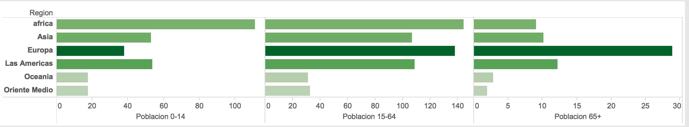

Creación de un gráfico de barras en Matplotlib — 7:08 min
7:08 min | Última modificación: Octubre 6, 2021 | YouTube

[1]:
import matplotlib.pyplot as plt
import numpy as np
import pandas as pd
df = pd.read_csv(
"https://raw.githubusercontent.com/jdvelasq/datalabs/master/datasets/indicadores-mundiales.csv",
sep=",",
encoding="latin-1",
)
data = df.groupby("Region").sum()[
["Poblacion 0-14", "Poblacion 15-64", "Poblacion 65+"]
]
data
[1]:
| Poblacion 0-14 | Poblacion 15-64 | Poblacion 65+ | |
|---|---|---|---|
| Region | |||
| Asia | 5318.6 | 10668.7 | 1013.0 |
| Europa | 3780.2 | 13830.6 | 2890.5 |
| Las Americas | 5375.5 | 10901.8 | 1223.1 |
| Oceania | 1784.8 | 3133.1 | 282.5 |
| Oriente Medio | 1754.7 | 3251.1 | 194.2 |
| africa | 11136.2 | 14452.7 | 911.7 |
[2]:
#
# Gráfico inicial
#
plt.bar(data.index, data["Poblacion 0-14"])
plt.show()

[3]:
#
# Rotación de los titulos del eje X
#
plt.bar(data.index, data["Poblacion 0-14"])
plt.xticks(rotation="vertical")
plt.title("Poblacion 0-14")
plt.xlabel("Poblacion 0-14")
plt.show()

[4]:
#
# Graficos por población
#
for index, colname in enumerate(data.columns):
plt.subplot(1, 3, index + 1)
plt.bar(data.index, data[colname])
plt.xticks(rotation="vertical")
plt.title(colname)
plt.xlabel(colname)
plt.show()

[5]:
#
# Ajuste del tamaño
#
plt.figure(figsize=(16, 6))
for index, colname in enumerate(data.columns):
plt.subplot(1, 3, index + 1)
plt.bar(data.index, data[colname])
plt.xticks(rotation="vertical")
plt.title(colname)
plt.xlabel(colname)
plt.show()

[6]:
#
# Rotación de la figura
#
plt.figure(figsize=(16, 6))
for index, colname in enumerate(data.columns):
plt.subplot(1, 3, index + 1)
plt.barh(data.index, data[colname])
plt.xticks(rotation="vertical")
plt.title(colname)
plt.xlabel(colname)
plt.show()

[7]:
#
# Formateo de los ejes
#
fig, axs = plt.subplots(1, 3, sharex="col", sharey="row", figsize=(16, 6),)
plt.style.use("fast")
plt.subplots_adjust(wspace=0.05, hspace=0.1)
for index, colname in enumerate(data.columns):
axs[index].barh(data.index, data[colname])
axs[index].set_xlabel(colname)

Para cambiar los estilos de colores: https://matplotlib.org/gallery/style_sheets/style_sheets_reference.html
[8]:
fig, axs = plt.subplots(1, 3, sharex="col", sharey="row", figsize=(16, 6))
plt.style.use("fast")
plt.subplots_adjust(wspace=0.05, hspace=0.1)
for index, colname in enumerate(data.columns):
axs[index].barh(data.index, data[colname], color='tab:blue', alpha=0.8)
axs[index].set_xlabel(colname)
axs[index].spines["left"].set_color("gray")
axs[index].spines["bottom"].set_color("gray")
axs[index].spines["top"].set_visible(False)
axs[index].spines["right"].set_visible(False)